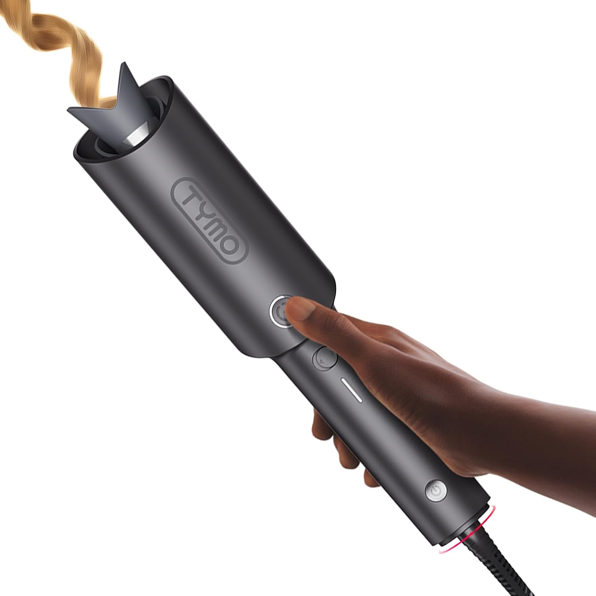
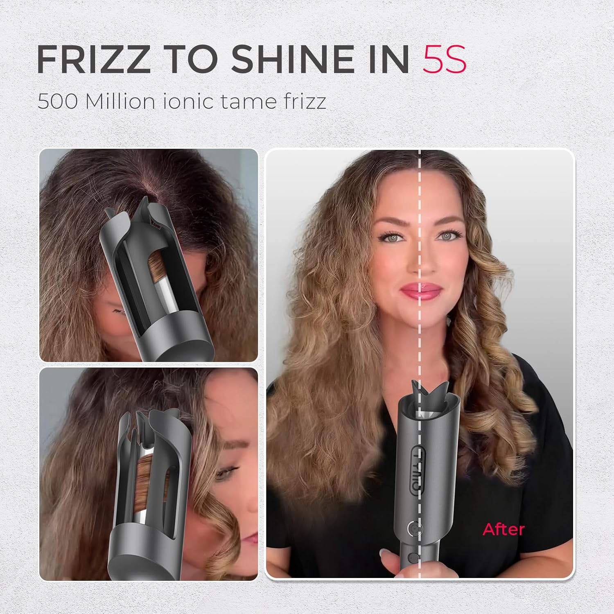
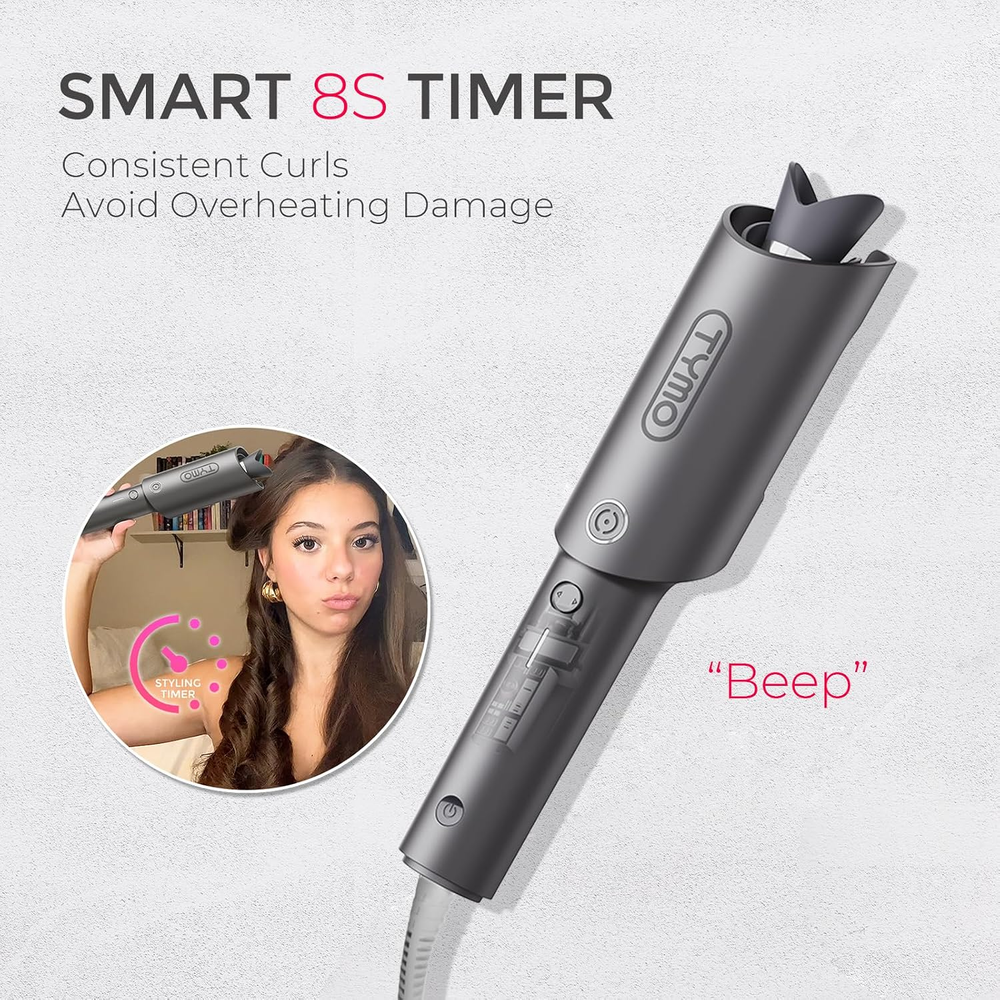
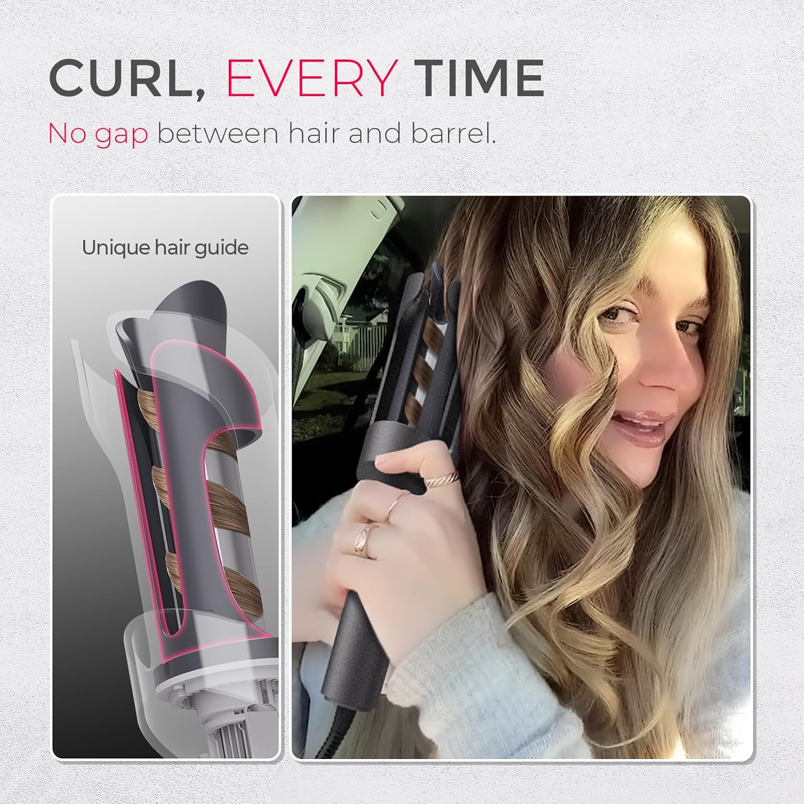

Beautiful Curls. Less Effort. More Confidence.
Meet the TYMO Automatic Rotating Curling Iron — designed to simplify your everyday curling routine and help you create gorgeous-looking curls at home.
- Beginner-friendly automatic curling
- Smart 8-second styling timer
- Guided barrel design
(paid link) As an Amazon Associate I earn from qualifying purchases.

Love the curls, not the struggle?
Traditional curling can take practice. TYMO's rotating design offers a more guided approach to everyday styling.
Automatic Curling
Helps simplify styling with less manual wrapping.
Smart Timer
An advertised 8-second timer and audible cue guide the styling process.
Ionic Technology
Designed to help create a smoother-looking finish.
Guided Design
The hair guide helps position strands around the barrel.

From frizz-looking hair to a polished finish
Explore the look of soft, defined curls with the help of a guided curling tool. Results depend on hair type, technique and settings.
View on Amazon ↗Paid affiliate link. We may earn a commission from qualifying purchases.
Styling guidance in 8 seconds
The advertised smart timer provides an audible cue to help guide your curling routine. Always choose suitable heat settings and follow the manufacturer's safety instructions.
- 8-second styling timer
- Audible cue
- Convenient guided routine


Designed to guide every curl
The specially shaped guide helps hair wrap around the barrel, making it easier to learn a repeatable styling technique.
Explore product details ↗Paid affiliate link.
Your routine in four simple steps
Prepare
Start with completely dry, detangled hair.
Choose settings
Select appropriate heat settings per the manufacturer.
Guide & rotate
Place a suitable section into the guide and activate rotation.
Release & cool
Follow the cue, release carefully and let curls cool.
Heat styling can cause burns or hair damage. Always follow the manufacturer's instructions.
Frequently asked questions
Is this curling iron beginner-friendly?
Its rotating mechanism is designed to simplify curling, though some practice may still be needed.
Does it have a styling timer?
The supplied product materials describe an 8-second timer and audible cue.
Can it be used on different hair types?
Suitability and results depend on hair type and condition. Check the manufacturer's instructions before use.
Where can I purchase it?
Use a Shop on Amazon link to view the current listing, product details and availability.
Is this the official TYMO website?
No. This is an independent affiliate product guide, not an official TYMO or Amazon website.
Ready to make curling feel easier?
Discover the TYMO Automatic Rotating Curling Iron and check current details on Amazon.
Shop on Amazon ↗(paid link) As an Amazon Associate I earn from qualifying purchases.